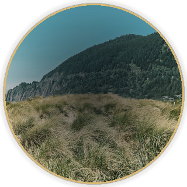

STAGE REVIEW
ASCEND PATH
LOCAL
TONIGHT · CORE FORMATION
Self-Contemplation
Month 1 of 24
NowDay 1
ReflectAfter practice
NextTomorrow
0 practice days · 7 required

0 practice days · 7 required
Core Formation and the specialized pathways keep separate progression records.
Preparing the independent training programs.
Beginning
Practice days: 0
Create or sign in to your account. ASCEND Path requires active paid access.
Verifying your ASCEND membership…
ASCEND is a structured 24-month practice in attention, self-observation and conscious development.
Each day gives you one clear practice. Press and hold the circle, read the briefing, then begin when you are ready.
The Journal is part of the daily practice. One honest observation is enough; you do not need to complete every field.
Your 24-month Core Formation opens through sustained practice and reflection. Library teachings support the stage you are living now.
There is nothing to rush. Return each day, do the work, record what you observe, and let the Path unfold.
ASCEND Path is a sustained, cumulative training in attention, self-observation and inner work, drawn from a structured contemplative tradition. Some material touches lineage and ancestral history, sustained energy and attention work, and material that can surface strong emotion. You may pause, skip, or stop any exercise at any time — nothing here should ever be forced.
This app is not a medical device and is not a substitute for medical or mental health care. Its traditional and Steiner-attributed markers describe subjective, contemplative experience within this tradition — they are not scientific or medical claims, and nothing in ASCEND Path diagnoses, treats or certifies spiritual attainment. If you have a history of trauma, psychosis, dissociation, bipolar disorder, or are currently in a mental health crisis, please consult a qualified mental health professional before beginning, and consider practicing only with their support.